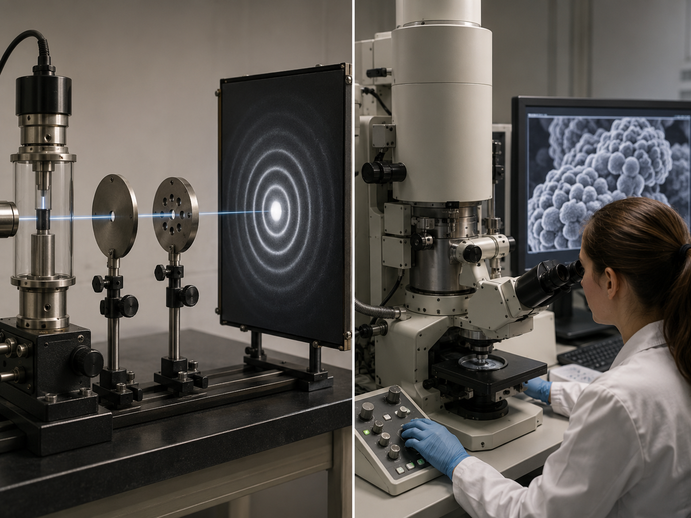

Leitfrage
Was bedeutet das Quadrat einer Wellenfunktion physikalisch?
Kontext: Ein einzelner Treffer ist zufällig, die Trefferverteilung kann sehr genau vorhersagbar sein.

1 · Startcheck: Was bringst du mit?
Entscheide, welche Aussage für dieses Thema im Leistungskurs besonders wichtig ist.
2 · Modell und zentrale Gleichungen
Modellidee: Bornsche Deutung, Normierung, Wahrscheinlichkeitsdichte.
Notiere in eigenen Worten, welche Größen in der Gleichung experimentell bestimmt werden können und welche Annahmen dahinterstehen.
3 · Übungsaufgabe mit LK-Anforderung
Material: In einem Experiment zu Wellenfunktion und Wahrscheinlichkeitsdichte werden Messwerte aufgenommen. Eine Auswertung liefert zwei Messpunkte, aus denen eine Kenngröße bestimmt werden soll. Rechne mit sinnvoller Genauigkeit und begründe jeden Ansatz.
- Beschreibe zunächst das physikalische Modell und die Systemgrenzen.
- Stelle eine passende Gleichung symbolisch nach der gesuchten Größe um.
- Formuliere eine Fehlerquelle oder Modellgrenze, die das Ergebnis beeinflussen könnte.
Erwartungshorizont anzeigen
Erwartet wird kein bloßes Einsetzen, sondern eine klare Argumentationskette: Modellannahme → Formelansatz → Einheit → Ergebnisdeutung → Modellgrenze. Im LK ist die Herleitung oder Begründung des Ansatzes Teil der Leistung.
4 · Diagramm- und Simulationscheck
iPad-Hinweis: Die Simulation ist lokal, benötigt kein Drag-and-drop und reagiert auf Touch-Slider.
Beschreibe, wie sich eine Parameteränderung im Diagramm zeigt. Benutze dabei mindestens zwei Fachbegriffe.
5 · Fehlerdiagnose
Typische fehlerhafte Lösung: „Wellenfunktion direkt als Bahn deuten; Dichte und Wahrscheinlichkeit verwechseln. Deshalb setze ich einfach alle gegebenen Werte ohne weitere Prüfung in eine Formel ein.“
Korrigiere diese Erklärung. Was ist fachlich falsch oder unvollständig?
6 · Sicherung für dein Heft
Fasse das Thema in drei Sätzen zusammen: 1. Grundidee, 2. wichtigste Gleichung, 3. Modellgrenze oder Anwendung.
Passendes Experiment / Anwendung
Histogramm von Einzelereignissen, Simulation Potentialtopf